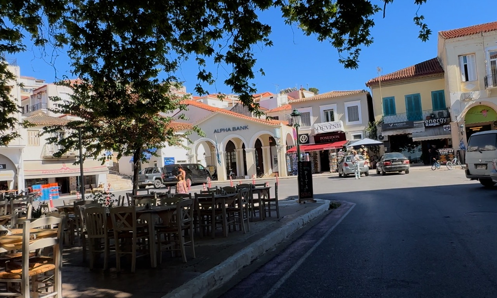
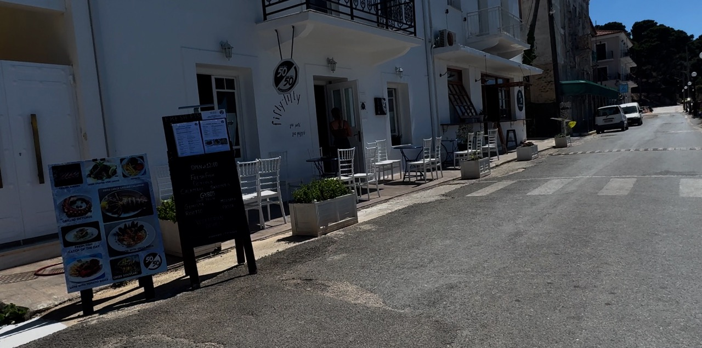
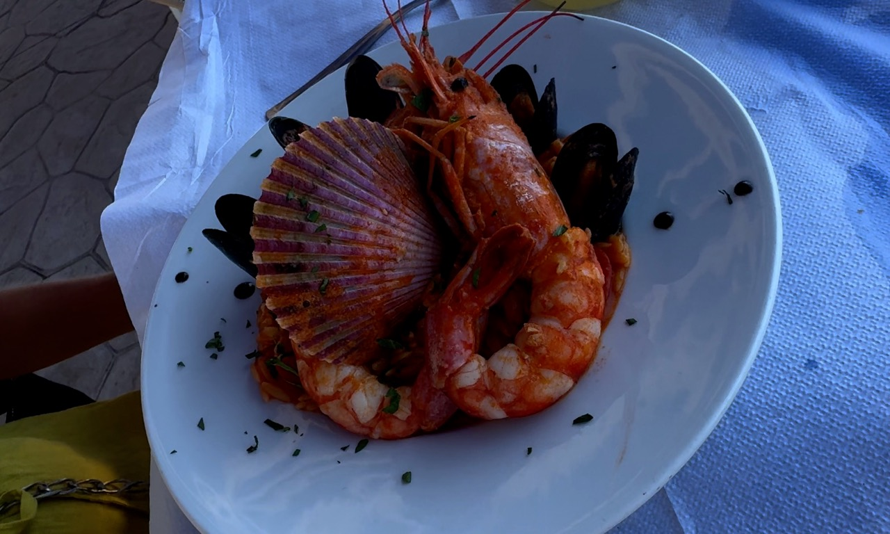
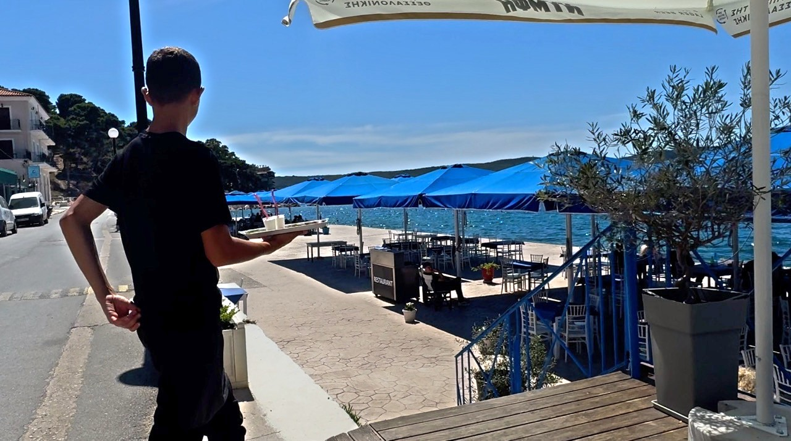

If you’ve been travelling around the Peloponnese in Greece, you’ll know that some towns are famous for ancient ruins, others for beautiful beaches, and a few seem to exist primarily to test your patience while trying to park the car.
Pylos, on the southwest coast of the Peloponnese, is a rather more civilised affair. With its pretty harbour, enormous shady square, waterfront tavernas and relaxed Greek atmosphere, it’s the sort of place that makes you want to abandon the sightseeing, order an iced coffee and watch the world go by and that’s pretty much what we did. Well, eventually. First, there was a beach, a very useful changing cubicle, a seafood pasta lunch, a footwear emergency and an increasingly suspicious case involving a pair of my missing swimming shorts.
Welcome to Pylos, one of our stops on our travels around the Peloponnese with Flip Flop Flicks.
THREE ADMIRALS’ SQUARE: THE HEART OF PYLOS

Our exploration of Pylos starts at Three Admirals’ Square, the town’s impressive central meeting place.
Dominated by enormous plane trees, whose spreading branches provide welcome shade from the Greek sunshine, the square is surrounded by cafés and restaurants. It's a lovely place to sit and watch everyday Greek life unfold. Locals meet friends, families gather under the trees and visitors settle down with cold drinks. There's a lovely, lived-in feel about the place. Pylos doesn't seem to be performing for tourists; it's a working Greek town where everyday life carries on around you and that's one of the things Jacquie and I love about Greece.
An iced coffee can become a surprisingly lengthy event. You sit down for a quick drink, watch a few people pass by and suddenly discover that an hour has disappeared. Nobody seems particularly concerned. Why rush when there's no pressing reason to move?
During the hotter months, the shade from those enormous trees is particularly welcome. Make time to enjoy the square rather than simply passing through. Sometimes, watching everyday Greek life is every bit as enjoyable as visiting another historic monument.
PYLOS AND THE BATTLE OF NAVARINO
Although Pylos feels wonderfully peaceful today, the surrounding area has a fascinating history. The nearby Bay of Navarino was the setting for the Battle of Navarino in October 1827, a decisive naval engagement during the Greek War of Independence. British, French and Russian fleets defeated the Ottoman-Egyptian fleet, helping secure the future of an independent Greece.
It's quite something to stand beside these beautiful waters and imagine the dramatic events that unfolded here almost two centuries ago. Today, the bay is better known for its tranquil waters, boats and coastal scenery than naval warfare. Thankfully, visitors can appreciate the history without having to dodge cannonballs.
A BEACH, A CHANGING CUBICLE AND A SEAFOOD LUNCH
Before heading into town, we'd spent some time enjoying one of the local beaches. One of Pylos's advantages is that you don't have to travel miles away from civilisation to enjoy the sea. Its small town beach makes it easy to combine a swim with sightseeing and lunch.
After our beach time, Jacquie decided she wanted to get changed before we went out to eat. Fortunately, Pylos provided a very useful changing cubicle, allowing her to swap her beachwear for something more suitable for lunch. Little did we know that this changing cubicle would become central to our day's events.
You see, Jacquie and I have rather different approaches to swimwear. Jacquie likes variety. Different swimsuits for different days, depending on her mood, the location and, naturally, what looks good in the photographs.
Me? I'm deeply loyal to my swimming shorts. Once I find a pair I like, they become permanent members of the family. It doesn't matter how old they are or how many holidays they've accompanied me on. They're comfortable, they're familiar and, in my world, that's reason enough to keep them.
I'm fairly certain I'd happily wear the same pair indefinitely if Jacquie didn't occasionally intervene. She has visions of quietly donating some of my old favourites to a charity shop. I'm not entirely enthusiastic about this proposal.
Anyway, having changed and made ourselves respectable enough for lunch, we headed into town, completely unaware that my beloved swim shorts were about to disappear from my life.
We chose 50/50, a waterfront taverna where we enjoyed a generous plate of seafood pasta. And when I say generous, I mean the sort of portion that makes you wonder whether the kitchen has misunderstood the number of people sitting at the table.
The pasta was rich, full of flavour and exactly what you want after a morning at the beach. With the harbour nearby, it was an ideal place to stop and enjoy a leisurely Greek lunch.
We love these simple moments when travelling around the Peloponnese. You don't always need a carefully planned excursion or a list of famous attractions. Sometimes, a good meal in a lovely location is the highlight of the day.


If you're visiting Pylos, explore the waterfront and choose a taverna that appeals to you. Seafood, fresh fish and traditional Greek dishes are all part of the attraction.
Just remember to check you've collected all your belongings before leaving, particularly if you've recently used a changing cubicle.
Some of us are still learning that lesson.
A HOLIDAY FOOTWEAR EMERGENCY
After lunch, we wandered around the streets near the square, browsing Pylos's small shops selling souvenirs, clothing, jewellery and other holiday essentials and as it turned out, the shops were about to come to the rescue.
Jacquie had a footwear problem. After our time at the beach, she needed something suitable to wear around town. Unfortunately, her available alternative was a pair of black neoprene beach shoes.
Now, there's absolutely nothing wrong with neoprene beach shoes. They're practical and useful on rocky beaches, but practical and fashionable are not necessarily the same thing. For Jacquie, these shoes represented something of a holiday style emergency. She likes to look reasonably well put together, even when we're travelling around Greece, and black neoprene beach shoes weren't quite the look she had in mind.
Fortunately, we found a shop selling flip-flops, and Jacquie managed to buy herself a pair. Were they her ideal colour? No. Were they the perfect addition to her carefully considered holiday wardrobe? Probably not. Were they a considerable improvement on black neoprene beach shoes? Absolutely. Crisis averted.
Jacquie's footwear situation was sorted. Little did she know that my wardrobe was in considerably worse shape.
THE CASE OF MY MISSING SWIMMING SHORTS
Back at our accommodation, I discovered something was missing. My swimming shorts and not just any shorts, but one of my trusted favourites, with years of loyal service behind them.
I searched through our things, retraced my steps and then remembered the changing cubicle. I'd left them behind.
I announced that we'd return to Pylos the following day to see if they were still there. Jacquie was delighted. Not because she particularly wanted me to recover them, but because she'd been trying to persuade me to retire some of my old favourites for years. Now, it seemed, fate was doing the job for her but I wasn't giving up on my shorts without a fight.
The following day, we returned to the changing cubicle. Nothing - no shorts. They'd disappeared. I was disappointed. Jacquie, naturally, was finding the whole thing rather amusing.
Then, at the beach, we spotted a local man wearing a pair of bright orange shorts. They looked remarkably similar to mine.
Now, I'm not one to jump to conclusions. There could be hundreds of pairs of orange swimming shorts in Greece. Perhaps they were fashionable that summer. Perhaps he'd owned them for years. Perhaps he'd bought them perfectly legitimately from a perfectly legitimate shop but the resemblance was striking.
Jacquie thought it was hilarious, while I contemplated the possible fate of my beloved swimwear. Had someone found my shorts in the changing cubicle and given them a new lease of life? Or had my wife spotted the perfect opportunity to reduce my swimwear collection without the inconvenience of a conversation about decluttering?
I'm not making any accusations against Jacquie. I'm merely pointing out that she'd wanted to get rid of my old shorts for years, mine had mysteriously vanished, and a man in suspiciously similar orange shorts had appeared the following day. You can draw your own conclusions.
The case remains open.
If you visit Pylos and spot a man wearing bright orange swimming shorts, please let us know. We may need to reopen the investigation and Jacquie, if you're reading this, I shall be keeping a much closer eye on my wardrobe from now on.
BEST THINGS TO SEE AND DO IN PYLOS

Despite the missing swimwear incident, Pylos has plenty to recommend it.
- Three Admirals' Square: Find a shady table beneath the plane trees, order a cold drink and watch everyday Greek life unfold.
- Walk around the harbour: Enjoy the views across the bay, stroll along the waterfront and browse the restaurants.
- Enjoy the town beach: A swim is an easy addition to your day, particularly if you want to combine beach time with lunch and sightseeing.
- Explore the shops: Browse for clothing, jewellery, souvenirs and holiday essentials. You never know when a footwear emergency might strike.
- Enjoy a Greek lunch: The waterfront is a lovely place to eat. We enjoyed our seafood pasta at 50/50.
- Discover the area's history: Learn about the Battle of Navarino and its important role in the history of modern Greece.
- Explore the surrounding coastline: Pylos makes a useful stop on a road trip around the southwest Peloponnese, with other coastal towns, beaches and historic sites within reach by car.
PRACTICAL TIPS FOR VISITING PYLOS, GREECE
How long should you spend in Pylos?
Allow at least a few hours to explore the town. A leisurely half-day gives you time to visit the square, walk around the harbour, enjoy lunch and perhaps have a swim.
Is Pylos worth visiting on a road trip?
Absolutely. It's a convenient stop when exploring the southwest Peloponnese, particularly if you enjoy coastal towns, beaches, history and good food.
Is there parking?
There are parking options around Pylos, including spaces close to the town centre. Availability varies with the season and time of day, so allow some flexibility during busy summer periods.
Can you swim in Pylos?
Yes, there is a small town beach, making it easy to combine a swim with exploring the town. Check local conditions and available facilities when you arrive.
Where should you eat?
Explore the waterfront. We enjoyed seafood pasta at 50/50, and the relaxed setting makes it a lovely place for an unhurried Greek lunch.
What should you bring?
Take sun protection, drinking water and comfortable footwear, especially during the summer. If you're planning a swim, pack your beach things carefully before leaving.
And, as I would strongly recommend, check the changing cubicle before you go.
OUR VERDICT: IS PYLOS WORTH VISITING?
Pylos was a lovely stop on our travels around the Peloponnese. Jacquie and I enjoyed the enormous square, the waterfront, the shops and a very satisfying seafood pasta lunch.
It's a town where you can slow down, enjoy a swim, sit beneath the trees and experience everyday Greek life. It doesn't need to shout about itself or offer a never-ending list of attractions. Its charm lies in its setting, relaxed atmosphere and the simple pleasure of spending time there.
For us, Pylos also delivered a shopping success, a footwear rescue and a mystery that may never be solved.
Jacquie left with a new pair of flip-flops. I left one pair of swimming shorts down.
And somewhere, possibly on a beach in Pylos, a man in bright orange shorts may or may not be enjoying the best swimming shorts purchase of his life.
Coincidence?
Almost certainly.
Probably.
Let's just say that if Jacquie ever suggests I have a clear-out of my old swimming shorts, I'll be asking a few questions.
Have you visited Pylos? We'd love to hear what you thought of this charming Greek town. And if you've ever lost something on holiday and then spotted someone else wearing something suspiciously similar, do tell us your story in the comments on our YouTube video.
For more of our travels, beach adventures and occasional domestic mysteries, follow Flip Flop Flicks as Jacquie and I explore the Peloponnese and discover what makes this part of Greece so special.